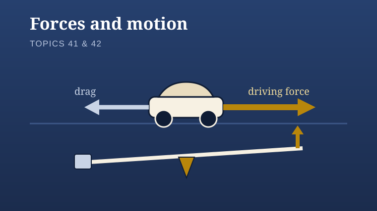

Year 7 Science · Topic 39
Forces and motion
Explain force effects, compare balanced and unbalanced forces, then calculate resultants.

Lessons
Lesson 01
Lesson 02
Lesson 03
Lesson 05
Forces and their effects
Open lesson
Balanced and unbalanced forces
Open lesson
Resultant forces
Open lesson
Grip or slip? Friction
Includes an interactive friction lab: 3D friction bench, force arrows, trolley design and Tarsia puzzles.
Open lesson
Record your work in your book. Each lesson includes support, extension questions and model answers. Optional models open from the relevant slide in a separate tab.